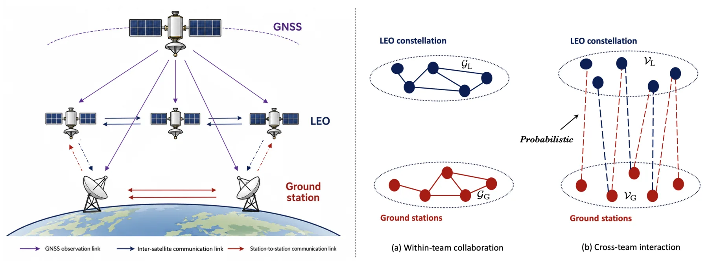
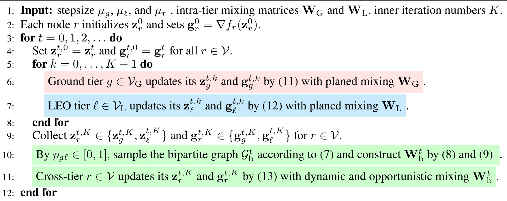

高精度 GNSS 地面—空间参考网络协同Coordination of Ground-to-Space Reference Networks for High-Precision GNSS
覆盖高精度 GNSS、动态网络和去中心化估计，对未来广域 PPP/改正服务有潜在价值；但当前摘要未显示与机器人 GNSS/INS 紧耦合或整数模糊度固定的直接实验。
一句话工作总结
在地面站—LEO 动态网络中用去中心化估计生成 GNSS 高精度改正，面向通信受限的地面到空间协同。
摘要
论文将地面站与搭载 GNSS 接收机及星间链路的低轨卫星建模为动态图上的交互子网络，提出适应间歇、非对称、容量受限和有损通信的去中心化处理架构。方法通过高频的层内通信与机会式跨层摘要交换，协调轨道、钟差、大气和硬件偏差等高精度 GNSS 改正产品的生成，以改善稀疏或地域集中的地面参考网络的可观测性。
High-precision Global Navigation Satellite System (GNSS) services rely on accurate orbit, clock, atmospheric, and hardware-bias corrections generated from reference observations. These products are traditionally derived from terrestrial reference networks, whose performance strongly depends on the density and geographic distribution of ground stations. Consequently, sparse or regionally concentrated networks can suffer from tracking gaps and limited global observability, reducing their ability to support globally consistent high-precision products. Low Earth Orbit (LEO) constellations equipped with onboard GNSS receivers and inter-satellite links (ISLs) can serve as a network of spaceborne reference stations, offering a promising way to extend terrestrial reference networks into space, thereby improving observability for ground networks and enabling future direct correction broadcast. However, most existing network-based GNSS correction-generation workflows assume that observations can be centrally collected and processed. This assumption fails in practical ground--to--space architectures, where dynamic satellite geometry and system constraints render communication links intermittent, asymmetric, capacity-limited, and lossy. To address these limitations, this paper proposes a decentralized processing architecture that coordinates the ground-to-space GNSS reference network. By modeling ground stations and LEO satellites as interacting subnetworks over a dynamic graph, our approach allows frequent intra-tier communication while restricting cross-tier exchanges to compact estimation summaries transmitted opportunistically under probabilistic link availability....
中文解读摘录
- 论文：arXiv:2608.18636 · PDF
- 作者：Xue Xian Zheng, Xing Liu, José A. López-Salcedo, Gonzalo Seco-Granados, Tareq Y. Al-Naffouri
- 核心方法：把地面站与搭载 GNSS/星间链路的 LEO 卫星建模为动态图上的交互子网络，在通信间歇、非对称、受限和有损条件下，以去中心化摘要交换生成高精度 GNSS 改正产品。
- 判断：对未来 PPP/广域改正服务和稀疏参考网有潜在价值，但当前仍未显示与机器人 GNSS/INS 紧耦合、整数模糊度固定或城市峡谷鲁棒定位的直接实验。
- 评分：7.8/10。
图表/页面预览
{kind=link}

{kind=link}
